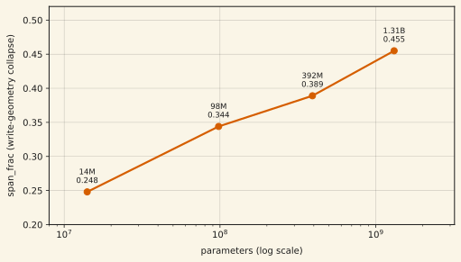
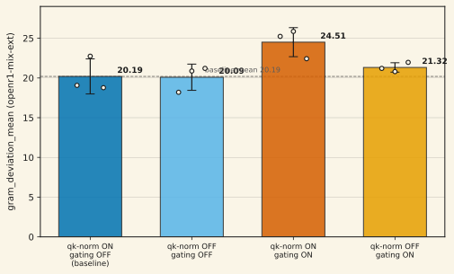
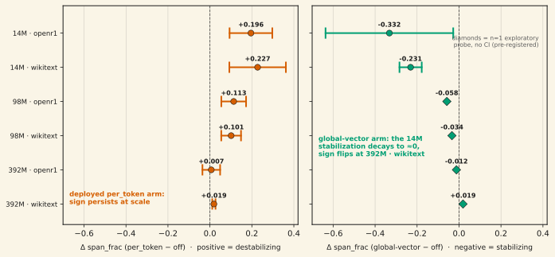

In DeltaNet-family language models, the geometry of what gets written into the fast-weight state — the per-layer key Gram matrix — collapses toward a low-effective-rank basin during training. We call this the write-geometry attractor. It is not a small-model artifact: on a four-point scale ladder it worsens monotonically, span_frac 0.248 at 14M → 0.344 at 98M → 0.389 at 392M → 0.455 at 1.31B parameters. A natural deflationary reading is that this is the published qk-norm eigenvalue-stability issue in disguise, since every run trains with the community-standard qk-l2-norm mitigation on. A pre-registered 2×2 factorial at the 14M rung (qk-norm on/off × decay gating on/off, n = 3 seeds per cell) rules that out: turning qk-norm off moves the collapse metric by −0.103 (0.05σ against the same-corpus noise floor) — a clean null. Decay gating (the Gated-DeltaNet mechanism used in production stacks) shows a direction-consistent worsening trend — +4.31, all three paired per-seed deltas positive — that did not confirm at the pre-registered 2σ bar (1.92σ; exploratory Welch p = 0.062). Gated arms reach lower loss while carrying the pathology no better. Update (July 10): the fix-at-scale wave landed, and no tested frozen-bias construction stabilizes the attractor at scale — the deployed per_token arm stays sign-destabilizing at 98M on both corpora and at 392M-wikitext (CI-excludes-zero, both instruments; 392M-openr1 null; zero cells in the mechanism-predicted direction), and the one construction that stabilized at 14M decays to ≈zero and loses its sign on one corpus by 392M. Every arm stays val-loss-neutral at every tested scale (8/8 gates): the free-of-cost half of the 14M result transfers; the geometry half does not. Preprint in preparation.
01The attractor
A fast-weight layer writes rank-1 updates β v k⊤ into a fixed d × d state. How much of the state those writes can address depends on the geometry of the keys: orthonormal keys span the state; collapsed keys pile writes into a shrinking subspace. We track this with the deviation of the per-layer key Gram matrix from orthonormality, summarized on the scale ladder as span_frac — the fraction of the gap between random-init geometry and full collapse that a trained checkpoint has traversed.

02The 2×2: is it just qk-norm? does gating change it?
Every run in this program trains with use_qk_l2norm_in_kernel=True — the stock mitigation for the known eigenvalue-stability issue in delta-rule kernels (adopted by Kimi Linear and Qwen3-Next, among others). If the attractor were that issue in disguise, toggling the mitigation should move the metric. And Gated DeltaNet's decay gating is the actual production mechanism in modern stacks — if it dissolves the attractor, the pathology is an artifact of the vanilla architecture. So: a 2×2 factorial at the 14M rung, baseline cell byte-identical to the scale ladder's own configuration, outcome = same-corpus layer-pooled Gram deviation, n = 1 screen then n = 3 seeds per cell. The pre-registered confirmation bar: a cell's delta against baseline must exceed 2× the same-corpus cross-seed noise floor (2 × 2.244 = 4.489). The noise floor itself was corrected mid-build after an audit found the original had been pooled across out-of-distribution probe corpora, understating the true floor 2.65×.

qk-norm: exonerated
Turning the qk-l2-norm mitigation off does essentially nothing to the attractor: Δ = −0.873 (0.39σ) at the n=1 screen, Δ = −0.103 (0.05σ) at n=3, mixed sign across seeds. The attractor is not the published qk-norm stability issue wearing a costume. This is the load-bearing null of the experiment, and it held at both stages.
Gating: a direction-consistent trend, not confirmed at the pre-registered bar
The gated cell fired the escalation trigger at the n=1 screen (Δ +6.16, 2.75σ). At n=3 the effect shrank to Δ +4.31 — 1.92σ, below the 2σ bar the design itself set. The runner's own escalation logic reads fire = false. What survives honest scrutiny: all three paired per-seed deltas are positive (+6.16, +3.13, +3.65), and an exploratory (non-pre-registered) Welch t-test gives p = 0.062. We report this exactly as it is: a direction-consistent trend that did not confirm at the pre-registered bar — neither a confirmed amplification nor a null.
03The fix-at-scale wave: no tested construction stabilizes the attractor at scale
The 14M diagnosis run had produced two frozen-bias candidate mitigations: the per_token arm (deployed in the sibling head-to-head campaign; val-loss-neutral at 14M but with its own 14M geometry evidence pointing the wrong way, +0.196/+0.227 Δspan_frac destabilizing, CI-excludes-zero) and the global-vector arm, which genuinely stabilized at 14M (−0.332/−0.231, CI-excludes-zero). Neither had ever been run above 14M. The fix-at-scale wave adjudicated both: 28 cells at 98M and 392M on both corpora (openr1-mix-ext, wikitext-mix-ext), n = 3 seeds per confirmatory cell, reference bands pinned from fresh same-scale arm_off runs before any treated cell trained (blind discipline enforced mechanically and tamper-verified at harvest), two instruments per cell (post-blend primary + pre-blend co-primary). ≈130 GPU-h realized.

The per_token arm: the destabilizing sign persists at scale. 98M reads +0.113 [+0.054, +0.172] on openr1 and +0.101 [+0.054, +0.148] on wikitext — CI-excludes-zero positive on the primary AND the pre-blend co-primary (which rules out a static blend artifact: the effect is training-mediated, exactly as at 14M). 392M-wikitext reads +0.019 [+0.011, +0.027], still positive; 392M-openr1 is a null (+0.007 [−0.036, +0.049]). Zero of four scale×corpus cells move in the mechanism-predicted (stabilizing) direction on either instrument. Descriptively the magnitude attenuates up the ladder (+0.20 → +0.11 → +0.01/+0.02), but this is not a registered claim: the 392M cells ran a reduced 20k-step token budget vs 98M's Track-C-matched budget, so the 98M→392M attenuation is confounded with token budget by design. The within-scale readings are the registered claims.
The global-vector arm: the 14M stabilization does not survive transfer. Under the pre-registered n = 1 exploratory probe (no CI, never confirmatory), the construction that read −0.332/−0.231 at 14M reads −0.058/−0.034 at 98M — sign preserved, magnitude ≈1/6th–1/10th — and −0.012/+0.019 at 392M: essentially zero on one corpus and sign-flipped to destabilizing on the other. A curious mechanism datum for any future pass: the probe cells' pre-blend raw-key geometry is consistently worse than arm_off's own (98M +0.061/+0.055) — training through a constant bias degrades raw-key geometry even where the post-blend population reads better.
Val-loss neutrality is the half that transfers. All 8 gates pass (4 scale×corpus cells × per_token arm-mean + probe): both constructions remain free at the loss level at every tested scale, exactly as at 14M. One disclosed single-seed excursion (98M-wikitext per_token s0 = 3.2038 vs ceiling 3.2020; the arm mean passes) and thin 392M margins (0.001–0.003 nats, because arm_off's cross-seed spreads are tiny) are in the archived verdict.
04Limitations
- The 2×2 is one architecture point. 14M scale, dm256/L2/ds64, single-head vanilla-DeltaNet family. Not tested at production scale, on DeltaProduct-style multi-Householder generalizations, or on the full Qwen3-Next configuration. The 2×2 partially — not fully — discharges the "single architecture family" limitation of the scale-ladder work.
- Two instruments, two metrics. The scale ladder reports span_frac; the 2×2's probe reports Gram deviation/effective-rank/stable-rank. Directionally aligned, not interchangeable.
- n=1 sub-readings were not re-validated at n=3. Per-cell details from the screen (e.g., collapse concentrating in layer 0: baseline L0 17.10/L1 21.03 vs gated L0 30.90/L1 19.56) stand as single-seed observations only.
- Behavioral leg non-decisional. A secondary recall probe wired into the 2×2 was disclosed probe-invalid up front (a known zero-shot transplant floor; it reads 0.0 in every cell by design) and was never read for decisions.
- The 392M budget confound (fix-at-scale). The 392M cells trained ≈328M tokens vs 98M's ≈1.1B; cross-scale magnitude comparisons in section 03 are descriptive only. A full-budget 392M test could in principle read differently — disclosed, unbudgeted, no wave proposed.
- The global-vector reads at 98M/392M are n = 1, by pre-registration (exploratory probe tier). The 14M-only qualifier on "a geometry-stabilizing construction was identified" is permanent: the scaled test came back negative.
- One resumed cell. An arm_off_98m_openr1 seed was resumed after a contention abort (fresh optimizer over the remainder) and landed as the low val outlier; this widens that cell's reference CI — conservative for the primary reading, which clears it anyway. Disclosed in the archive.
05Reproducibility
Raw probe JSONs, aggregate files, MD5 manifests, and the independent recompute script (matches the runner's aggregates to <1e-6) are archived under experiment-runs/2026-07-09_attrrob_2x2_harvest/ and experiment-runs/2026-07-09_attrrob_2x2_escalation_harvest/ in the project repository. The fix-at-scale wave is archived under experiment-runs/2026-07-10_fixscale_harvest/ (train/calib/pins/pilots/measure trees, fixscale_harvest_verdict.json, the independent analyze_fixscale_harvest.py recompute — identical numbers — and the md5 manifest, 132/132 verified at publication); its 14M reference numbers come from experiment-runs/2026-07-06_frozen_bias_rung1/. Realized compute: ≈1.0 GPU-h (screen) + ≈2.0 GPU-h (escalation) + ≈130.2 GPU-h (fix-at-scale wave). The figure-generation script for this page is at assets/plots/generate_write_geometry_attractor.py.
References
- Yang, S., Kautz, J., & Hatamizadeh, A. (2024). Gated Delta Networks: Improving Mamba2 with Delta Rule. arXiv:2412.06464
- Kimi Team (2025). Kimi Linear: An Expressive, Efficient Attention Architecture. arXiv:2510.26692 (§4, qk-norm eigenvalue stability)